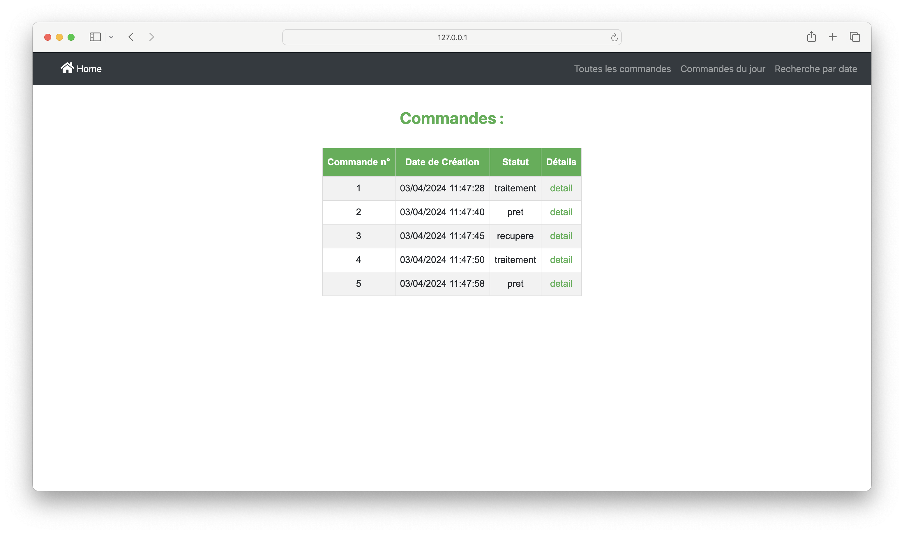
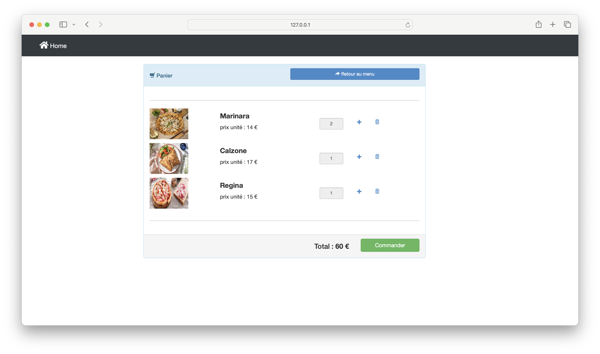
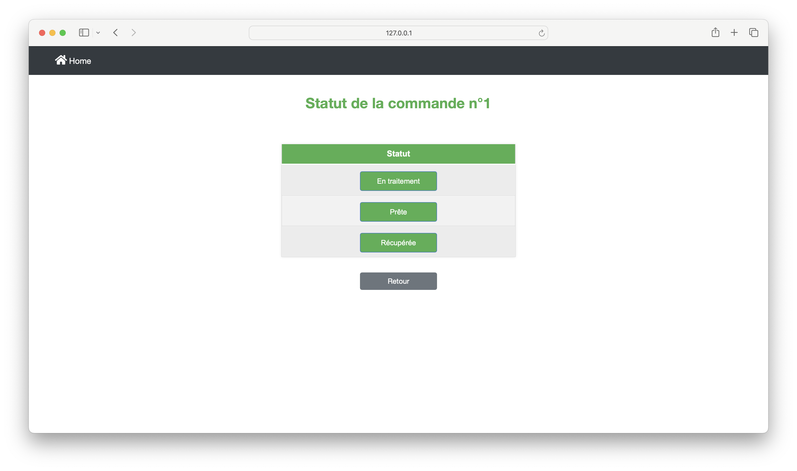

Page d'Accueil Admin

Cette page permet aux administrateurs de gérer le catalogue de pizzas et de superviser les commandes en cours.
Liste des commandes
Sur cette page, les administrateurs peuvent consulter les commandes passées et gérer leur suivi en temps réel.
Recette du jour

Cette vue présente un récapitulatif financier des commandes du jour pour le suivi des recettes.
Page d'Accueil Clients

Les clients découvrent ici les différents choix de pizzas disponibles et peuvent composer leur commande.
Panier
Le panier récapitule les pizzas sélectionnées par le client avant la validation de la commande.
Page d'Accueil Cuisinier

Les cuisiniers peuvent voir les commandes actives et mettre à jour leur statut sur cette page.
Modifier le statut de la commande
Les cuisiniers peuvent mettre à jour le statut des commandes, de la préparation jusqu'à la livraison ou le retrait par le client.